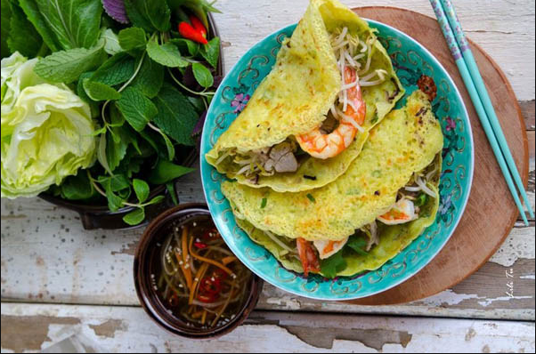
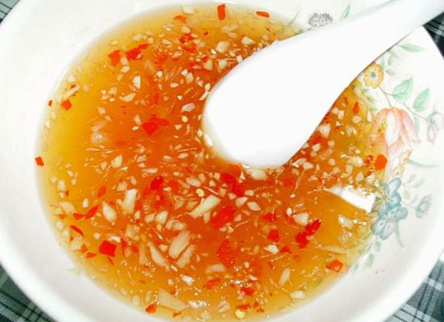

Bánh xèo
Bánh xèo là một món ăn truyền thống thuần túy và rất quen thuộc đối với chúng ta. Tuy nhiên ngày nay, bánh xèo Việt Nam đã trở thành một cái tên đặc biệt. Luôn luôn được nhắc đến bởi nhiều người nước ngoài khi ghé thăm Việt Nam. Bánh xèo cũng được biến tấu nhiều phù hợp với khẩu vị, phong tục của từng địa phương khác nhau. Nhưng đều giữ chung cho món ăn này một hương vị riêng. Để lại cho người thưởng thức nhiều cảm xúc khó quên khi dùng qua dù chỉ là một lần.
Cách làm bánh xèo đơn giản – Chuẩn bị nguyên liệu đơn giản
Đầu tiên cho bất kỳ món ăn nào đó chính là khâu chuẩn bị nguyên vật liệu. Như đã nói ở trên, đây sẽ là cách làm bánh xèo đơn giản nhất, Vì vậy, các nguyên liệu cần có cũng vô cùng đơn giản. Bạn chỉ cần chuẩn bị:
- Bột bánh xèo Mikko : 500g
- Tôm tươi: 150g
- Thịt ba chỉ heo: 150g
- Nấm hương: 15 cái
- Giá đỗ: 100g
- Đỗ sạch đã bóc vỏ: 50g
- Các loại nguyên liệu khác như: hành lá, cà rốt, xà lách, rau thơm, dầu ăn, đường, mắm, tiêu, hạt nêm ……
Các bước làm bánh xèo đơn giản:
Bước 1: Sơ chế nguyên vật liệu để đổ bánh xèo
- Đầu tiên, bạn tiến hành bóc bỏ các vỏ hành, tỏi, rửa sạch tất cả rồi thái chúng thành từng miếng nhỏ vừa phải.
- Cắt bỏ đầu, chân, và đuôi tôm. Lưu ý bạn cần lấy sạch các gân đen của tôm để tránh để lại mùi tanh. Sau đó rửa sạch, để ráo nước rồi ướp với các gia vị như muối, gừng, tỏi…
- Rửa sạch thịt ba chỉ rồi thái thành miếng mỏng. Ướp hạt nêm và tỏi băm sao cho vừa ăn với khẩu vị của bạn và gia đình.
- Nấm hương cho vào nước ngâm đến khi nấm nở, cắt bỏ chân nấm rồi thái thành sợi mỏng.
- Cà rốt cũng thái thành từng sợi mỏng, để sạch.
- Các loại rau dùng để ăn sống thì nhặt sạch sẽ, loại bỏ các lá sâu úa, ngâm với nước muối rồi để ráo nước.
Bước 2: cách pha bột làm bánh xèo đơn giản nhất:
Đối với cách pha bột bánh xèo Mikko này bạn có thể tiết kiệm được nhiều thời gian hơn trong khâu chuẩn bị cũng như chế biến. Bởi vì trong gói bột pha sẵn Mikko đã có đầy đủ các nguyên liệu cần thiết cho chúng ta chế biến.
Bạn không cần thêm nghệ, vì trong bột bánh xèo Mikko đã có sẵn bột nghệ. Tạo một màu vàng vừa phải, tự nhiên. Bên cạnh đó để tăng thêm độ ngon cho món ăn, bạn có thể thêm 1 muỗng dầu ăn vào bột. Sau đó khuấy đều. Lưu ý, đổ từ từ nước lọc vào bột, khuấy đều tay để bột tan hết, không bị vón cục.
Sau đó, bạn cho một ít hành lá đã được thái nhỏ vào bột, khuấy đều. Để bột nghỉ từ 15 đến 20 phút là bạn có thể tiến hành đổ bánh xèo.
Bước 3: Làm nhân bánh xèo
Trong thời gian chờ bột nghỉ, chúng ta hãy bắt tay vào làm nhân bánh xèo. Bạn bắt chảo lên bếp, sau đó đun nóng chảo với một ít dầu ăn. Đến khi cảm thấy được dầu đã nóng vừa phải thì lần lượt cho thịt, nấm hương, tôm và xào đều. Lưu ý không nên để dầu quá nóng vì khi ấy sẽ làm mất chất của các nguyên vật liệu làm nhân bánh xèo.
Trộn đều tay, đến khi tất cả tái chín thì tiến hành nêm nếm sao cho vừa ăn với khẩu vị của bạn mong muốn. Đợi thêm vài phút để tất cả gia vị đã thấm đều vào nhân thì bắt chảo xuống và cho tất cả ra bát để nguội.
Bước 4: Cách đổ bánh xèo đơn giản nhất:
Sau khi đã kết thúc tất cả các bước sơ chế nguyên liệu cũng như chuẩn bị xong nhân bánh. Chúng ta đã đầy đủ các thứ cần thiết để đổ bánh xèo.
Một lưu ý trong cách làm bánh xèo đơn giản đó chính là lựa chọn khuôn đổ bánh. Chúng ta nên lựa chọn khuôn hay chảo mỏng, có lòng chảo sâu. Thì lúc đổ bánh, bánh xèo sẽ mỏng và đều, đẹp hơn.
Bắt đầu cho chảo lên bếp. Nhỏ vào một ít dầu ăn, đun nóng. Khi chảo nóng, múc khoảng 1 muỗng canh nhỏ bột đã pha sẵn đổ đều khắp lòng chảo. Đậy nắp và đợi trong vài phút.
Sau đó bạn mở nắp chảo ra, cho tiếp phần nhân bánh đã chuẩn bị trước đó vào trên bề mặt bánh. Bỏ thêm một ít giá đỗ và sợ cà rốt để tạo màu sắc hấp dẫn hơn. Đậy nắp chảo và đợi khoảng 2 phút, lúc này bánh xèo đã hoàn toàn chín.
Cuối cùng, bạn mở nắp chảo ra. Tiến hành quan sát vành bánh. Nếu thấy vành bánh đã giòn thì tiến hành gấp đôi bánh lại. Cẩn thận khi gấp để bánh xèo không bị nát. Sắp ngay ngắn ra đĩa.
Bước 5: cách làm nước mắm ăn bánh xèo đơn giản nhất:
Mikko chia sẻ cho bạn một trong những cách pha nước mắm vô cùng đơn giản, dễ làm mà lại rất thơm ngon. Bạn hãy trộn đều hợp hợp gồm: 3 thìa nước mắm, ½ thìa nước sôi, 1 muỗng đường, 1 thìa tỏi băm và 2 trái ớt chín đỏ đã được băm nhuyễn. Khuấy đều cho đến khi đường tan hết, cho thêm một ít nước cốt chanh vào. Trộn đều lên,bạn sẽ có được chén mắm chấm thơm ngon, đậm đà.
Hy vọng với những chia sẻ về cách làm bánh xèo đơn giản nhất mà Mikko đã chia sẻ ở trên sẽ giúp bạn có thể tự làm được món ăn đặc biệt này ngay tại căn bếp nhỏ của mình.